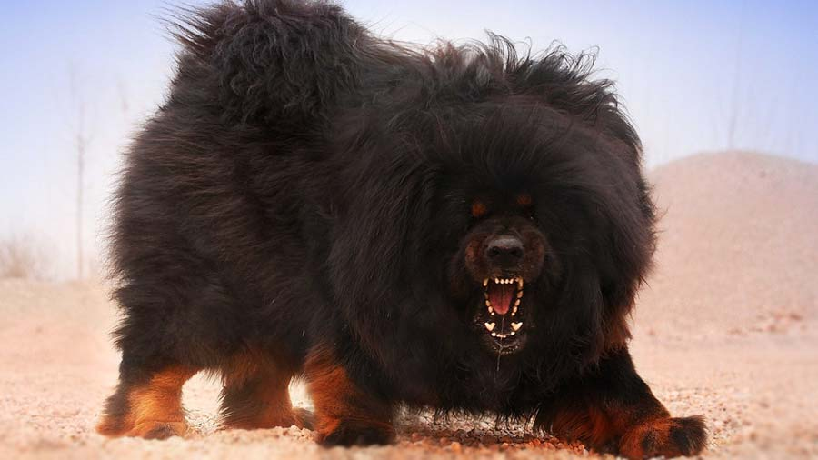

Tibetan Mastiff
The Tibetan Mastiff, originating from the Himalayas, is a majestic and ancient breed known for its imposing stature, thick coat, and loyalty. Historically a guardian, it now serves as a cherished companion.
- Scientific Name: Canis lupus familiaris.
- Length: Up to 113 centimeters.
- Lifespan: 12 to 15 years.
- Habitat: Himalayas and Tibetan Plateau.
- Diet: Beef, chicken, turkey, lamb, duck, eggs, and fish.
The Tibetan Mastiff adapts to its mountainous environment with a thick double coat for insulation, independent nature, keen senses, and protective instincts, making it well-suited for guarding and thriving in challenging terrains.